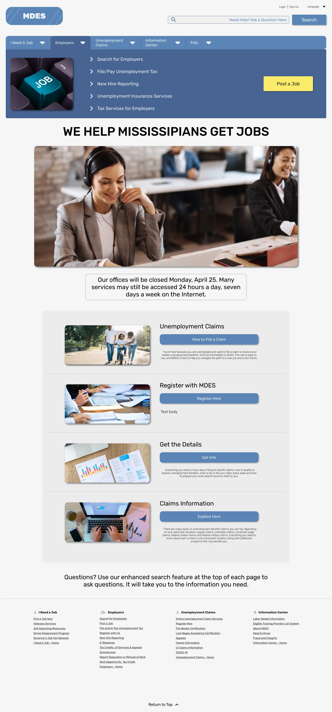
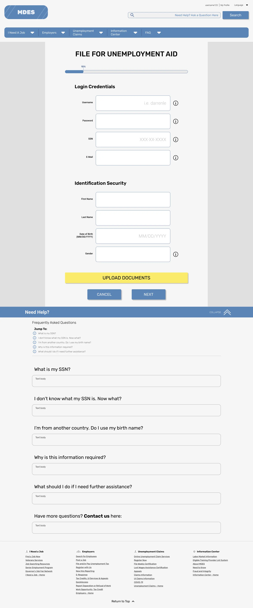

MDES Website Redesign
PROJECT SPECS:
Time: 5 weeks
The Team: 4 UI/UX developers (including myself)
My Responsibilities: Project manager, Facilitator, UX Researcher, UI Designer
Tools & Skills: user journey, proto-persona, site map, design principles, gestalt laws, A/B testing, usability testing, brand, style guide, Figma
Downloadable Slide Deck PDF1 • The Problem
Who is our client?
Mississippi Department of Employment Security (MDES) works to expand employment, improve workforce skills, and enhance productivity in our state.
What are we trying to solve?
Our users are having trouble applying for unemployment aid and navigating our website.
Our Mission:
The goal of the Mississippi Department of Employment Security is to help Mississippians get jobs.
Next Steps:
Identify the issues within the unemployment aid application process, and work to improve it by redesigning the website.
2 • User's Journey
KAREN FILMORE
Age: 35 y/o
Ethnicity: Caucasian
Occupation: Unemployed
Family: Husband / 2 children
Meet Karen
Karen was the sole breadwinner of her family, until she got fired during Covid-19 layoffs. She feels anxious for the future of her and her family. She has never filed for unemployment aid before. She's trying to juggle taking care of her newborn and applying to jobs, and navigating the MDES website seems like a daunting task.
Next Steps:
Full site audit from the perspective of our user persona.
Created our user's happy path, then brainstormed the potential unhappy paths from that.
Identified Pain Points:
Overall confusion in the process. User doesn't know what to do
What information is required to apply for aid?
Site layout and the format (content hierarchy) needs improvement
Alleviate feelings of anxiety
We created a mind map to come up with potential solutions based off of the pain points we identified. After voting, we decided on these two new features to implement:
- An FAQ system at every step of the process
- An official video tutorials page for accessibility
3 • Mockups
Home
FAQ Section
Video Tutorials
4 • Testing Plans
Important: There was no budget to execute these testing plans, so there is no data to make informed design changes and decisions from.
To conduct the in-person, moderated testing, we decided that we needed a facilitator to provide context while exploring the prototype.
Context: You need to find out how to apply immediately, and you don't have time to read
through the FAQ.
Task: How would you go about learning more about the process?
Context: You have started the application process. You have some questions about what the
field is asking for.
Task: Where would you look for clarification & help?
KEY SUCCESS METRICS:
- User can apply quickly and easily
- User can obtain all necessary information in order to complete the application
- User does not get lost during the process
Ideally, in a real project going into production setting, I would want to observe and test these changes with real users, both returning and new.
Success metrics for the returning users would be that the changes are still intuitive if they needed to get to a page that was removed from the new system. If the returning user struggles to find what they are looking for, then the revamp has failed.
Success metrics for new users would be for them to be able to get where they need to, quickly with minimal amount of clicks.
5 • Establishing the Style Guide
Tone
Friendly, approachable, & optimistic tone
Mississippi's values:
- State of hospitality
- Conservative
- Religious
Color
Blue : Reliability
Yellow : Optimism, positivity, friendship
White : peace, calm
CVD Tested with Tanaguru Contrast Finder
Font
Photo Guidelines
- Happy people (families and workers)
- Business
- Office work
- Bright images
- Joyful/warm tone
- Photos with blue or orange or both

6 • Usability Testing
How do our wireframes fare after applying the style guide?
Results & Actionable Items
- Reword 'File a Claim' CTA button
- Nothing was legible (except the logo) because all of the font sizes were too small
- Make the buttons a little easier to click (fix spacing)
- Make sure everything that is clickable is at least 48x48px
- Make the blue color darker for CVD
7 • Final Takeaways
The Empathize Phase
The process of empathizing with our target users through creating a user persona and conducting the full site audit gave us a deeper insight on problems that the user might encounter. It was a good gateway into our mind map brainstorming session, where we were able to come up with many different ideas to tackle the identified problems.
User Testing
Our usability testing addressed critical accessibility errors, such as legibility for those with weak eyesight and clickability of elements. Having a list of actionable items allowed us to make iterative improvements and ensured a stronger and universal final design.
Style Guide
Analyzing the brand personality to create a style guide that conveys the core values of MDES ensured consistency and a cohesive visual identity in our prototypes. It helped us a lot in fleshing out our low-fidelity prototypes.
Through our redesign process, we pinpointed and resolved significant pain points, resulting in a comprehensive, user-centric design that lays the groundwork for an enhanced and user-friendly unemployment site.
Final Mobile Prototype (Figma link)